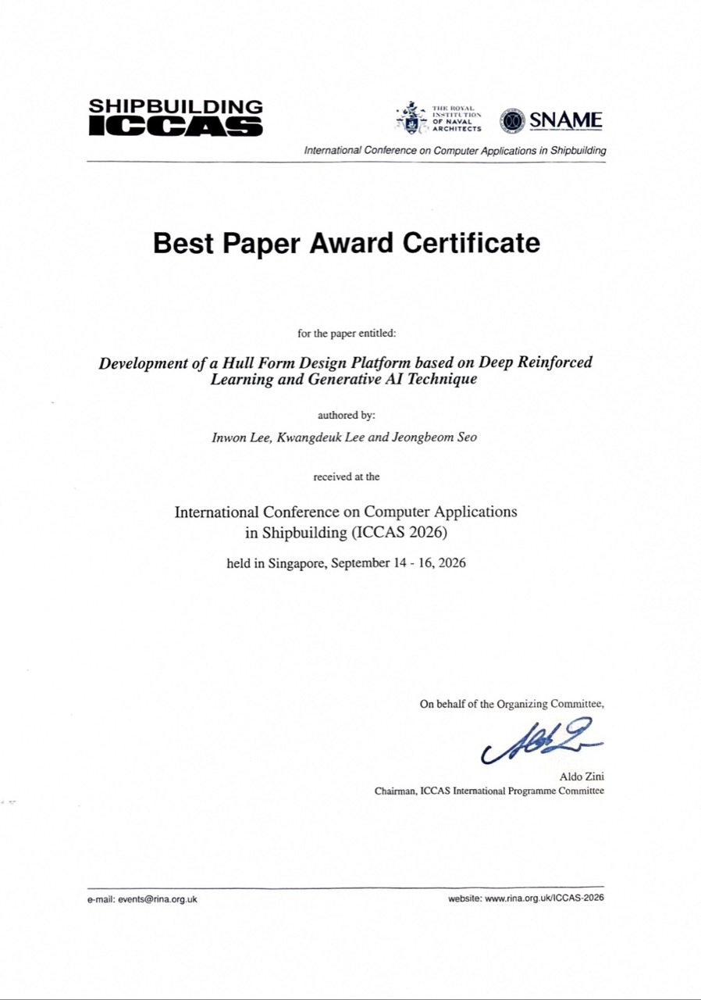

ICCAS 2026 최우수 논문상 수상
심층 강화학습과 생성형 AI를 활용한 선형설계 플랫폼 연구가 ICCAS 2026에서 최우수 논문상(Best Paper Award)을 수상했습니다.
Best Paper Award at ICCAS 2026
Research on a hull-form design platform using deep reinforcement learning and generative AI received the Best Paper Award at ICCAS 2026.

이인원(Inwon Lee), 이광득(Kwangdeuk Lee), 서정범(Jeongbeom Seo)의 논문이 2026년 9월 14일부터 16일까지 싱가포르에서 열린 국제 조선 컴퓨터 응용 학회(International Conference on Computer Applications in Shipbuilding, ICCAS 2026)에서 최우수 논문상을 수상했습니다.
수상 논문
Development of a Hull Form Design Platform based on Deep Reinforced Learning and Generative AI Technique
논문은 심층 강화학습과 생성형 AI 기법을 기반으로 한 선형설계 플랫폼 개발을 주제로 합니다.
저자
Inwon Lee · Kwangdeuk Lee · Jeongbeom Seo
수상 정보와 논문명, 저자 및 학회 개최 기간은 첨부된 ICCAS 2026 최우수 논문상 상장을 기준으로 작성했습니다.
Inwon Lee, Kwangdeuk Lee and Jeongbeom Seo received the Best Paper Award at the International Conference on Computer Applications in Shipbuilding (ICCAS 2026), held in Singapore from September 14 to 16, 2026.
Award-winning paper
Development of a Hull Form Design Platform based on Deep Reinforced Learning and Generative AI Technique
The paper addresses the development of a hull-form design platform based on deep reinforcement learning and generative AI techniques.
Authors
Inwon Lee · Kwangdeuk Lee · Jeongbeom Seo
The award details, paper title, authors and conference dates are taken from the ICCAS 2026 Best Paper Award certificate shown above.